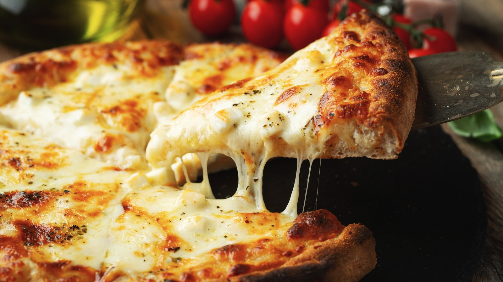

Margherita Pizza

~Description~
Margherita pizza is a simple yet flavorful Italian classic made with a thin, crispy crust topped with fresh tomato sauce, slices of mozzarella cheese, and fresh basil leaves. It's baked until the cheese is melted and bubbly, and the crust is golden. The combination of fresh ingredients highlights the balance of flavors—savory, creamy, and aromatic—making it a timeless favorite.
~Ingredients~
- 2 cups all-purpose flour
- 1 teaspoon instant dry yeast
- 3/4th teaspoon salt
- 1/2 teaspoon sugar
- 3/4th cup warm water (approx.)
- 1 tablespoon olive oil
- 2 medium tomatoes (blanched & pureed or use canned crushed tomatoes - 1/2 cup)
- 1 tablespoon olive oil
- 1-2 cloves garlic (minced)
- Salt to taste
- A pinch of sugar
- A few fresh basil leaves or 1/4th teaspoon dried basil
- A pinch of oregano or chili flakes
- 1000125g fresh mozzarella (sliced or torn)
- Fresh basil leaves (a handful)
- 1-2 teaspoons olive oil (for drizzling)
- A sprinkle of salt or black pepper
~Steps~
- Make the dough:
- In a mixing bowl, combine flour, yeast, sugar, and salt.
- Gradually add warm water and mix into a soft dough.
- Add olive oil and knead the dough for 8–10 minutes until smooth and elastic.
- Cover the bowl with a damp cloth and let it rise for 1–1.5 hours in a warm place until doubled in size.
- Prepare the sauce:
- In a pan, heat olive oil and sauté garlic for a few seconds.
- Add the tomato puree, salt, and sugar.
- Let it simmer for 10–15 minutes until thickened.
- Add basil and optional oregano or chili flakes. Stir and let cool.
- Preheat your oven:
Preheat your oven to 230°C (450°F). If using a pizza stone, preheat it too.
- Shape the dough:
- Punch down the risen dough and knead briefly.
- Roll it out or stretch it into a thin round base (about 10 inches).
- Place it on a baking sheet or pizza stone.
- Assemble the pizza:
- Spread a thin layer of pizza sauce on the dough.
- Evenly place the mozzarella slices on top.
- Add fresh basil leaves.
- Drizzle a little olive oil over everything.
- Bake!
Bake in the preheated oven for 10–12 minutes, or until the crust is golden and the cheese is melted and bubbly.
- Serve:
Remove from the oven, let it cool slightly, slice, and enjoy!
~You’ve made a fresh, cheesy, and fragrant Margherita Pizza—simple, elegant, and straight from your own kitchen! 🍕🌿